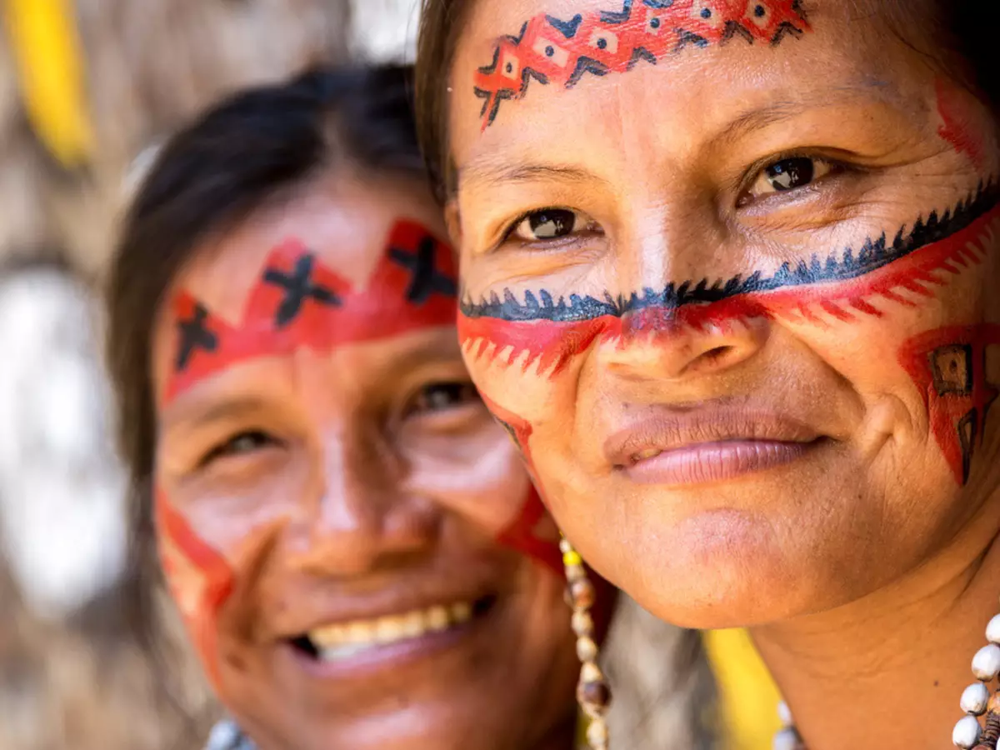

Pintura corporal e facial
Os indígenas brasileiros têm uma tradição rica de pintura corporal e facial. Utilizando tintas naturais feitas de pigmentos vegetais, argilas e outros materiais, eles criam desenhos intricados e simbólicos em seus corpos, transmitindo identidade, proteção espiritual e celebrações rituais. Essas pinturas também são feitas em tecidos de algodão e podem ser usadas como telas de decoração indígenas para ambientes, podendo colocar em molduras ou chassis internos.
Marcas de identidade cultural
Provavelmente, você já deve ter visto que os indígenas possuem pinturas corporais características, mas já se perguntou o que elas significam? Os indígenas carregam no corpo e no rosto a identidade cultural de seu povo. As pinturas são as marcas de muitas etnias e são diferentes para cada ocasião. As tintas são feitas de elementos naturais, como urucum e jenipapo, e podem manter-se na pele por um período de 15 a 20 dias.
Segundo a mestranda em Antropologia Eliene Putira, que também é presidente da Associação dos Povos Indígenas Estudantes na UFPA, cada traço tem um significado. A pesquisadora ressalta que o significado das pinturas depende de cada etnia, ou seja, uma mesma pintura pode ter significados diferentes dependendo da etnia que a faz. Existem desenhos que demonstram sentimentos, desde os mais felizes até os de revolta e indignação pelos problemas enfrentados pelos povos.
“Muitas pessoas fazem pinturas, porque acham bonitas, mas nem sempre as pinturas bonitas significam alegria. Muitas vezes significam luto, tristeza e passagem”, alega Eliene Putira. A professora comenta que as pinturas são, ainda, a identidade dos povos e, por meio delas, podem identificar também à qual etnia pertencem. Outra característica representada pela arte são as peles de animais como jabutis, cobras, entre outros.
Pintura e ancestralidade
As pinturas feitas pelos indígenas carregam uma história com uma ancestralidade muito grande por trás de cada uma delas. Essa arte indígena está muito além do valor estético, ela obedece a preceitos mágicos simbólicos e cosmológicos da sociedade que a representa.
“Lembro que, uma vez, pintei minha perna com a pintura indígena de outro povo e senti minha perna pesando muito. Comentei com a pessoa que estava fazendo a arte, e ela me disse que aquela pintura era forte, pois eu iria precisar de força”, relembra Putira. Isso ocorre, porque os grafismos indígenas são mais do que simples pinturas corporais, eles carregam consigo uma força extraordinária e honrosa.
Pintura corporal
A pintura corporal é utilizada pelos indígenas em momentos especiais, como na prática de rituais e de celebrações e varia de acordo com as ocasiões. Cada etnia indígena possui um tipo específico de pintura, que é representativa e identifica as características da tribo.
As tintas utilizadas na pintura corporal são obtidas a partir de elementos da natureza, como na extração de óleos de sementes e flores.
As pinturas possuem significados diferentes e podem representar os lugares ou funções ocupadas por cada membro da etnia, assim como podem ser usadas para representar os membros de uma mesma família.
Da mesma forma, as pinturas são diferentes para as mulheres e para os homens. As mulheres casadas, por exemplo, utilizam pinturas específicas para identificar seu compromisso perante outros membros da tribo.

Pintura Facial
A pintura facial indígena brasileira é uma prática cultural profunda e simbólica, presente em várias etnias, como os Yanomami, Guarani, Xavante e Pataxó. A pintura é realizada com tintas naturais extraídas de plantas, sementes, carvão e outros recursos da natureza, e tem diferentes significados conforme a etnia. Pode ser usada para rituais de passagem, como o ingresso na vida adulta, para marcar eventos importantes ou para expressar identidade e pertencimento. As pinturas também podem ter funções espirituais, como proteção contra inimigos ou forças sobrenaturais, além de representar a conexão com os ancestrais e a natureza. Assim, a pintura facial é uma forma de arte e comunicação que mantém viva a cultura indígena.

Marca Étnica
A professora e antropóloga Jane Beltrão explica que, para os indígenas, se pintar ritualmente também é uma forma de expressar os mais delicados valores de sua cultura. Uma cultura rica que possui múltiplas formas de decorar corpos e artefatos, usando criativamente os mais diversos suportes – corpos, pedras, cerâmica entre tantos outros – para sua arte.
“A arte indígena é um sofisticado meio de comunicação estética, que informa aos demais sobre a diferença da qual emana força, autenticidade e valores das nações indígenas. Exibir as marcas tribais é indicar a resistência ao colonialismo, ao eurocentrismo e ao androcentrismo”, afirma a antropóloga.